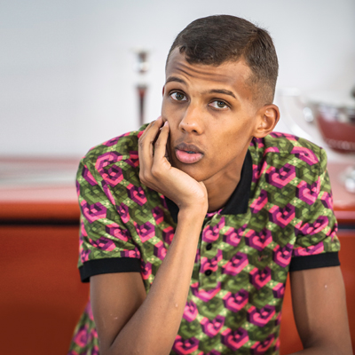
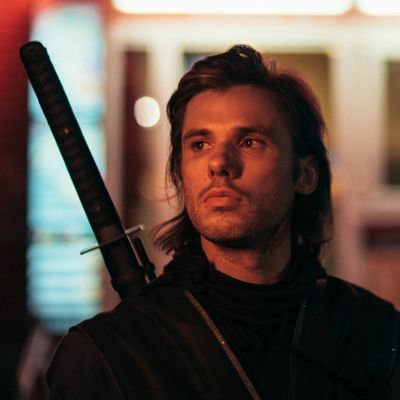

les tournées françaises de 2022
Sur cette page nous allons vous présenter les tournées qui on été confirmées en 2022
Stromae
 Le revoici Stromae. L'artiste belge qui nous fait le plaisir de revenir après 9 ans d'absence. Son album sortira en Mars 2002 et il repartira sur une tournée Francophone puis Mondial dnas l'Année 2022 avec comme point de chute Paris bien évidemment mais aussi le Festival des vieilles Charrues a Carhaix ou encore les Zénith de Nantes et Toulouse. Si vous voulez plus d'information le site est ici vous pouvez le consulter.
Orelsan
 Orelsan le tonton de tous les Caennais et Caennaises repart pour une tournée francophone avec des dates à Caen, Lille, Clermont, Toulouse, Rennes, Nantes et bien d'autre pour avoir plus d'info allez voir son site
Angèle
Angèle nous fait le plaisir d'une nouvelle tournée qui se nomme Nonante-Cinq tour après avoir sortie son album Nonante-Cinq l'année dernière